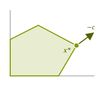

Introduction to Optimization
CO 250
Lecture 13
Kevin Shu
- Convexity, vertices, extreme points, and linear optimization
- Dual LPs
Convexity and Half-Spaces

A set $S$ is convex if, for any $x,y\in S$ and $0\le t\le1$, \[tx+(1-t)y\in S.\]
Every half-space $\{x:a^{\intercal}x\le b\}$ is convex.
Intersections of convex sets are convex. Thus every polytope $P=\{x:Ax\le b\}$ is convex.
Vertices and Equations

A vertex of a polytope defined by $P = \{x \in \R^n : Ax \le b\}$ is a point $x \in P$ where $n$ linearly independent constraints are tight.
That is, if we make a matrix $A^=$ by taking rows $a_i$ of $A$ where $a_i^{\intercal}x = b_i$, then $A^=$ is of rank $n$.
Vertices of polytopes are exactly extreme points. They are elements $x$ of $P$ where for any $y,z \in P$ where $y \neq x$ and $z \neq x$, and any $t \in [0,1]$, \[ ty + (1-t)z \neq x. \]
Example: The Cube

The cube is $\left\{x\in\R^3:\begin{aligned} 0&\le x_1\le1\\ 0&\le x_2\le1\\ 0&\le x_3\le1 \end{aligned}\right\}$.
Vertices are points where $3$ linearly independent inequalities are tight, i.e. points where each $x_i$ is equal to either 0 or 1. There are 8 vertices that arise in this way.
Vertices and Basic Feasible Solutions

For $P=\{x\in\R^n:Ax=b,\ x\ge0\}$, assume $A$ has $m$ independent rows.
A basis selects $m$ independent columns. Set the other variables to zero and solve \[x_B=A_B^{-1}b,\qquad x_N=0.\]
If $x_B\ge0$, this is a basic feasible solution. The vertices of $P$ are exactly its basic feasible solutions.
At least $n-m$ coordinates are zero; a degenerate basic feasible solution can have more.
Linear Optimization and Vertices
A unique maximizer of a linear function on any set must be an extreme point: otherwise it would average two points with smaller objective values.
A nonempty feasible set in standard equality form has an optimal basic feasible solution whenever the objective is bounded above.
The assumptions matter: on $\{x\in\R^3:x_1+x_2+x_3=0\}$, the objective $x_1+x_2+x_3$ is constant, yet the feasible set has no extreme points.

Separating Hyperplane Theorem
- Farkas' Lemma
Dual Linear Programs
Certificates of Optimality
Let's remember what a certificate of optimality is for an LP in SEF.
| max | $c^{\intercal}x$ |
| such that | $Ax = b$ |
| $x \ge 0$ |

A feasible $x^*$ and a free $y$ with
\[\begin{aligned}A^{\intercal} y &\ge c\\b^{\intercal} y &= c^{\intercal} x^*\end{aligned}\]
We will want to look at a more general version of a certificate.
Inequality Proofs
We will let $P = \{x \in \R^n : Ax = b, x \ge 0\}$.
If we have a candidate $x^*$ for an LP that could be optimal, it is easy to 'check' that $x^*$ is in $P$.
The hard thing is to show that the objective cannot be improved.
This amounts to proving that for any $x$ so that $Ax = b$ and $x \ge 0$, \[c^{\intercal}x \ge v,\] where $v$ is some constant.
There might be infinitely many points in $P$, so we want to use the constraints in a more efficient way.
Certificates of Optimality
We have the constraints \[ Ax = b, \] from which we can derive many other equations. For example, we can take the inner product of both sides of this equation with $y \in \R^n$: \[ y^{\intercal}Ax =y^{\intercal} b, \]
Imagine for a second that we could write $y^{\intercal}A = c^{\intercal}$, then we would have that for any feasible $x$, \[ c^{\intercal}x = y^{\intercal}Ax =y^{\intercal} b, \]
This would be nice, but it would be too strong, as it would imply that the objective is constant on the feasible set. We also do not use the constraint $x \ge 0$.
Certificates of Optimality
What we ultimately is to show that \[ c^{\intercal}x \ge v. \]
An important fact about nonnegative vectors is that if $a \ge c$, then $a^{\intercal}x \ge c^{\intercal}x$.
So if we can find some $y$ so that $A^{\intercal}y \ge c$, then we will get a lower bound \[ c^{\intercal}x \le y^{\intercal}Ax = y^{\intercal} b. \]
Certificates of Optimality
For any $y$ so that $A^{\intercal}y \ge c$, for every $x$ so that $Ax = b$ and $x \ge 0$, \[ c^{\intercal}x \le y^{\intercal}Ax = y^{\intercal} b. \]
Note the structure here: any $y$ satisfying the linear inequalities $A^{\intercal}y \ge c$ produces a lower bound that says that the objective value $c^{\intercal}x \le b^{\intercal} y$.
We can try to compute the best possible upper bound: this is a linear programs!
Dual Linear Program
| max | $c^{\intercal}x$ |
| such that | $Ax = b$ |
| $x \ge 0$ |
| min | $b^{\intercal}x$ |
| such that | $A^{\intercal}y \ge c$ |
The dual linear program is obtained by an explicit transformation of the data for the LP.
The original linear program is usually called the primal linear program .
Dual Linear Program
Theorem (Weak duality)
For any linear program in SEF, if the dual linear program is unbounded, then the primal linear program is infeasible. If the primal linear program is unbounded, then the dual linear program is infeasible. If both linear programs are feasibile, then
| max | $c^{\intercal}x$ |
| such that | $Ax = b$ |
| $x \ge 0$ |
$ \le $
| min | $b^{\intercal}y$ |
| such that | $A^{\intercal}y \ge c$ |
Dual Linear Program
Claim: More generally, if $y$ is feasible for the dual linear program, and $x$ is feasible for the primal linear program, then
\[b^{\intercal}y \ge c^{\intercal}x,\]
And we can check this by looking at $y^{\intercal}Ax$:
\[ c^{\intercal}x \le (Ay^{\intercal})^{\intercal}x = y^{\intercal}Ax = y^{\intercal}b. \]
Note that if $x$ is feasible for the primal LP, then the dual LP is bounded; no dual feasible $y$ can achieve an objective value less than $c^{\intercal}x$.
Similarly, if $y$ is feasible for the dual LP, then the primal LP is bounded; no primal feasible $x$ can achieve an objective value less than $b^{\intercal}y$.
Example: A Furniture Workshop
A simplified weekly planning problem: how many chairs and tables should a workshop make? Treat production quantities as continuous.
| Chair | Table | Available | |
|---|---|---|---|
| Wood (metres) | 2 | 4 | 80 |
| Labor (hours) | 1 | 3 | 50 |
| Profit (dollars) | 40 | 90 |
Let $c,t$ be production quantities. The primal in SEF is \[\begin{aligned} \max\quad &40c+90t\\ \text{s.t.}\quad &2c+4t+s_1=80,\\ &c+3t+s_2=50,\\ &c,t,s_1,s_2\ge0. \end{aligned}\]
Example: A Furniture Workshop
Primal
\[\begin{aligned} \max\quad &40c+90t\\ \text{s.t.}\quad &2c+4t+s_1=80,\\ &c+3t+s_2=50,\\ &c,t,s_1,s_2\ge0. \end{aligned}\]
Dual
\[\begin{aligned} \min\quad &80u+50v\\ \text{s.t.}\quad &2u+v\ge40,\\ &4u+3v\ge90,\\ &u,v\ge0. \end{aligned}\]
Note the correspondence between variables in the primal and constraints in the dual and vice-versa.
Also note that the slack variables in the primal correspond to the dual variables being nonnegative.
The Workshop: Primal and Dual
\[\begin{aligned} \min\quad &80u+50v\\ \text{s.t.}\quad &2u+v\ge40,\\ &4u+3v\ge90,\\ & u,v\ge0. \end{aligned}\]
The variable $u$ is associated to the constraint on the amount of wood we have. The variable $v$ corresponds to labor.
There is an interpretation of this LP: imagine a competitor wanting to buy the wood and labor from us directly instead of our furniture. They offer us a price $u$ for each unit of wood, and $v$ for each unit of labor.
The objective is the total cost of our resources. The constraints reflect the fact that we wouldn't sell for less than we could make by selling furniture.
For this reason, dual variables are often called `shadow prices' in economics.
The Dual: Shadow Prices
Choose any furniture plan we can actually make, and any competitor's offer satisfying the dual constraints.
For each chair, the competitor pays at least $40$ dollars for its wood and labor. For each table, they pay at least $90$ dollars. So selling the resources used by our plan brings in at least as much as making the furniture.
The competitor is buying all our resources, including any we would leave unused. Since their prices are nonnegative, those leftovers can only increase the offer.
Therefore, any feasible production profit is at most any feasible offer:
\[\underbrace{40c+90t}_{\text{furniture profit}} \le \underbrace{u(2c+4t)+v(c+3t)}_{\text{offer for resources used}} \le \underbrace{80u+50v}_{\text{offer for all resources}}.\]
Taking the Dual Again
Taking the Dual Again
| max | $c^{\intercal}x$ |
| such that | $Ax=b$ |
| $x\ge0$ |
| min | $b^{\intercal}y$ |
| such that | $A^{\intercal}y\ge c$ |
| $y$ free |
What happens if we take the dual of the dual LP?
This is hard because the dual LP is not in SEF. Let's fix this
Taking the Dual Again
| min | $b^{\intercal}y$ |
| such that | $A^{\intercal}y\ge c$ |
| $y$ free |
| max | $-b^{\intercal}(y^+-y^-)$ |
| such that | $A^{\intercal}(y^+-y^-)-s=c$ |
| $y^+,y^-,s\ge0$ |
Here, $y^+$ and $y^-$ have length $m$ and $s$ has length $n$.
Taking the Dual Again
| max | $-b^{\intercal}(y^+-y^-)$ |
| such that | $A^{\intercal}(y^+-y^-)-s=c$ |
| $y^+,y^-,s\ge0$ |
| max | $\begin{pmatrix}-b\\b\\0\end{pmatrix}^{\intercal}\begin{pmatrix}y^+\\y^-\\s\end{pmatrix}$ |
| such that | $\begin{pmatrix}A^{\intercal}&-A^{\intercal}&-I\end{pmatrix}\begin{pmatrix}y^+\\y^-\\s\end{pmatrix}=c$ |
| $y^+,y^-,s\ge0$ |
Now, we can take the dual.
Taking the Dual Again
| max | $\begin{pmatrix}-b\\b\\0\end{pmatrix}^{\intercal}\begin{pmatrix}y^+\\y^-\\s\end{pmatrix}$ |
| such that | $\begin{pmatrix}A^{\intercal}&-A^{\intercal}&-I\end{pmatrix}\begin{pmatrix}y^+\\y^-\\s\end{pmatrix}=c$ |
| $y^+,y^-,s\ge0$ |
| min | $c^{\intercal}(-x)$ |
| such that | $\begin{pmatrix}A\\-A\\-I\end{pmatrix}(-x)\ge\begin{pmatrix}-b\\b\\0\end{pmatrix}$ |
| $x$ free |
Let's massage this a little more.
Taking the Dual Again
| min | $-c^{\intercal}x$ |
| such that | $\begin{pmatrix}-A\\A\\I\end{pmatrix}x\ge\begin{pmatrix}-b\\b\\0\end{pmatrix}$ |
| $x$ free |
| min | $-c^{\intercal}x$ |
| such that | $Ax\ge b$ |
| $-Ax\ge-b$ | |
| $x\ge0$ |
But if we combine the inequalities $Ax \ge b$ and $-Ax \ge -b$, what do we get?
Taking the Dual Again
| min | $-c^{\intercal}x$ |
| such that | $Ax\le b$ |
| $-Ax\le-b$ | |
| $x\ge0$ |
| min | $-c^{\intercal}x$ |
| such that | $Ax=b$ |
| $x\ge0$ |
This is the original LP! So we get that the dual of the dual LP is equivalent to the original LP.
Taking the Dual Again
| max | $c^{\intercal}x$ |
| such that | $Ax=b$ |
| $x\ge0$ |
| min | $b^{\intercal}y$ |
| such that | $A^{\intercal}y\ge c$ |
| $y$ free |
We have seen that if we go through the process of putting things into standard inequality form, then we can also take the dual of the dual and get the same thing back. But we can skip some of these steps when taking the dual of more general LPs.
Duals for LPs not in SEF
Primal–Dual Correspondences
Any LP can be dualized by putting the LP into SEF then taking the dual. We can go directly to the dual with some extra rules.
Coarsely, the corresondence goes like this:
| Primal (max) | Dual (min) | |
|---|---|---|
| Variables | $\leftrightarrow$ | Constraints |
| Constraints | $\leftrightarrow$ | Variables |
| Objective | $\leftrightarrow$ | Constant term of Constraints |
| Constant term in Constraints | $\leftrightarrow$ | Objective |
| Coefficients in Constraints | $\leftrightarrow$ | Coefficients in Constraints |
But usually, nonnegativity constraints on variables are treated differently from other constraints.
Primal–Dual Correspondences
More specifically, the correspondence goes like this:
| Primal (max) | Dual (min) | |
|---|---|---|
| Free variable | $\leftrightarrow$ | Equality constraint |
| Nonnegative variable | $\leftrightarrow$ | Inequality constraint |
| Equality constraint | $\leftrightarrow$ | Free variable |
| Inequality | $\leftrightarrow$ | Nonnegative variable |
Primal–Dual Correspondences
| Primal | Dual | |
|---|---|---|
| Maximize | $\leftrightarrow$ | Minimize |
| $n$ variables, $m$ constraints | $\leftrightarrow$ | $m$ variables, $n$ constraints |
| Constraint matrix $A$ | $\leftrightarrow$ | Constraint matrix $A^{\intercal}$ |
| Objective coefficients $c$ | $\leftrightarrow$ | Constraint right-hand sides $c$ |
| Constraint right-hand sides $b$ | $\leftrightarrow$ | Objective coefficients $b$ |
Taking the dual again returns the original LP. For a minimization primal, read the sign-and-constraint table from the dual column back to the primal column.
Step 1: Count the Dual Variables
\[\begin{aligned} \max\quad &5x_1+4x_2-2x_3\\ \text{s.t.}\quad &x_1+2x_2+x_3\le5,\\ &2x_1+x_2-x_3=4,\\ &-x_1+x_2+2x_3\ge1,\\ &x_1\text{ free},\quad x_2,x_3\ge0. \end{aligned}\]
There are three constraint rows, apart from variable sign restrictions. So the dual has three variables: $y_1,y_2,y_3$, one for each row.
Do not count $x_2,x_3\ge0$ as additional rows: these will determine the directions of the dual constraints.
Step 2: Determine Their Signs
The primal is a maximization problem. Each constraint row determines the sign of its dual variable.
| Primal row | Dual variable |
|---|---|
| $x_1+2x_2+x_3\le5$ | $y_1\ge0$ |
| $2x_1+x_2-x_3=4$ | $y_2$ is free |
| $-x_1+x_2+2x_3\ge1$ | $y_3\le0$ |
So $y_1$ is nonnegative, $y_2$ has no sign restriction, and $y_3$ is nonpositive.
Step 3: Build the Dual Constraints
There are three more constraints, one per primal variable. Read each column of the primal matrix to obtain their coefficients.
\[A=\begin{pmatrix}1&2&1\\2&1&-1\\-1&1&2\end{pmatrix}.\]
| Primal variable / column | Dual left side / relation |
|---|---|
| $x_1$ free: $(1,2,-1)$ | $y_1+2y_2-y_3$; equality |
| $x_2\ge0$: $(2,1,1)$ | $2y_1+y_2+y_3$; $\ge$ |
| $x_3\ge0$: $(1,-1,2)$ | $y_1-y_2+2y_3$; $\ge$ |
Step 4: Objective and Right-Hand Sides
The primal maximizes, so the dual minimizes.
The primal right-hand sides $(5,4,1)$ become the dual objective coefficients:
\[\min\quad 5y_1+4y_2+y_3.\]
The primal objective coefficients $(5,4,-2)$ become the dual constraint right-hand sides, in variable order:
\[\begin{aligned} y_1+2y_2-y_3&=5,\\ 2y_1+y_2+y_3&\ge4,\\ y_1-y_2+2y_3&\ge-2. \end{aligned}\]
Step 5: Assemble the Dual
Primal
\[\begin{aligned} \max\quad &5x_1+4x_2-2x_3\\ \text{s.t.}\quad &x_1+2x_2+x_3\le5,\\ &2x_1+x_2-x_3=4,\\ &-x_1+x_2+2x_3\ge1,\\ &x_1\text{ free},\quad x_2,x_3\ge0. \end{aligned}\]
Dual
\[\begin{aligned} \min\quad &5y_1+4y_2+y_3\\ \text{s.t.}\quad &y_1+2y_2-y_3=5,\\ &2y_1+y_2+y_3\ge4,\\ &y_1-y_2+2y_3\ge-2,\\ &y_1\ge0,\quad y_2\text{ free},\quad y_3\le0. \end{aligned}\]
Check: $x=(1,2,0)$ and $y=(2,1,-1)$ are feasible and both have objective value $13$. Thus both are optimal.